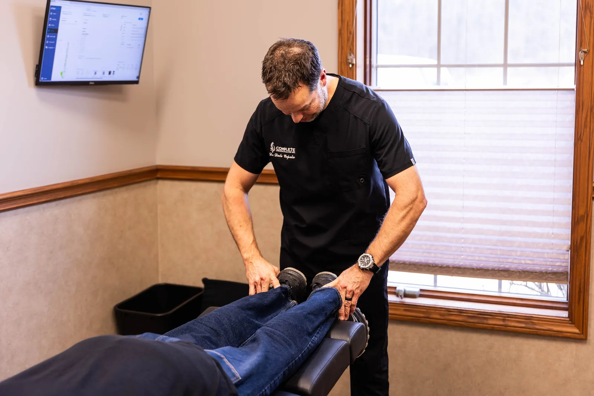
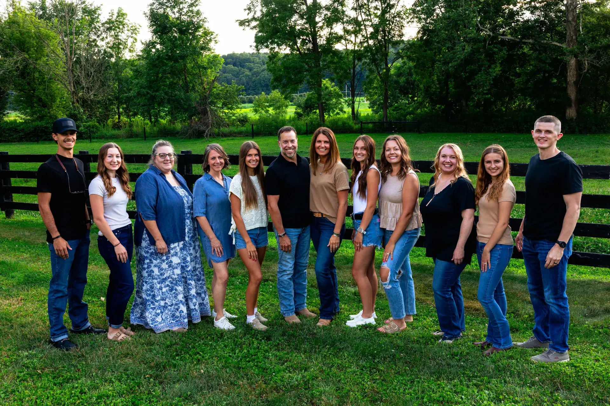
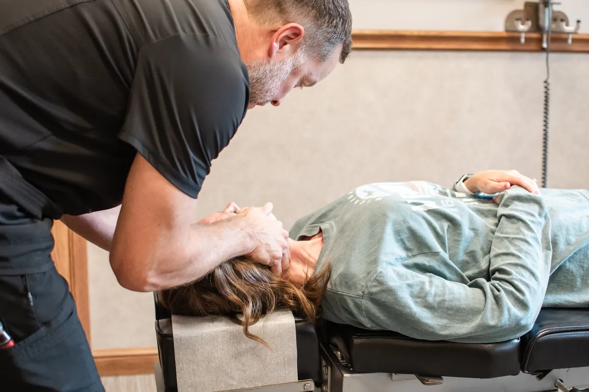
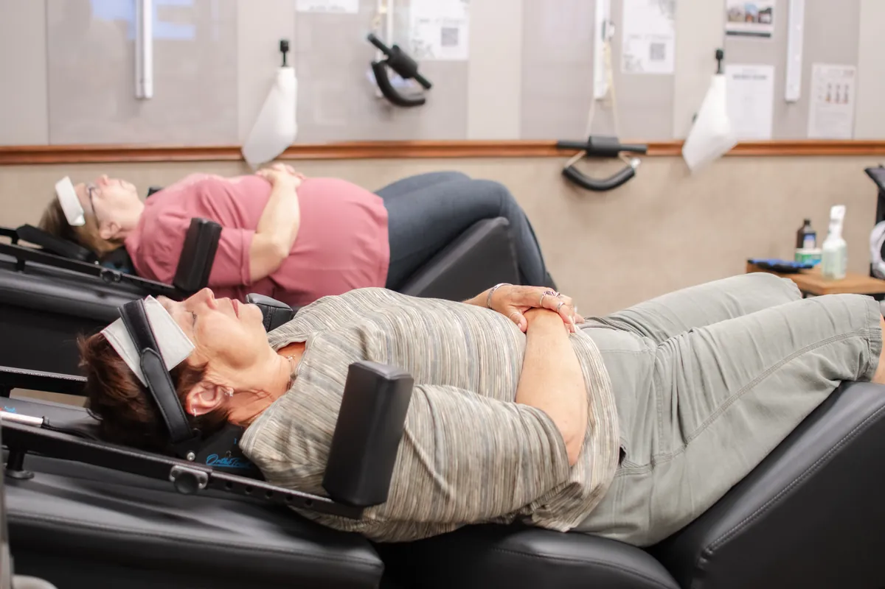
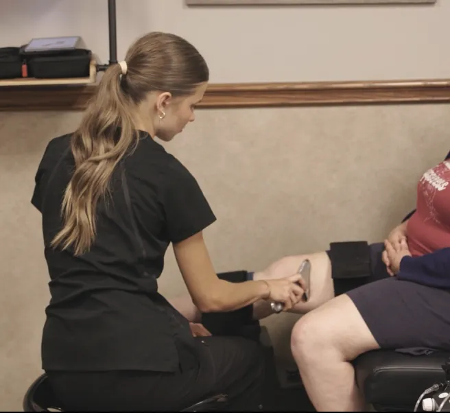
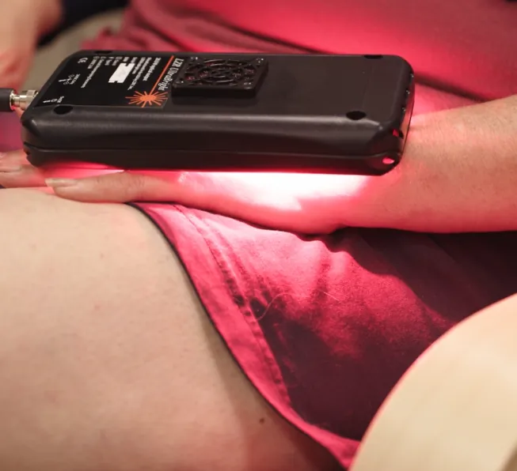
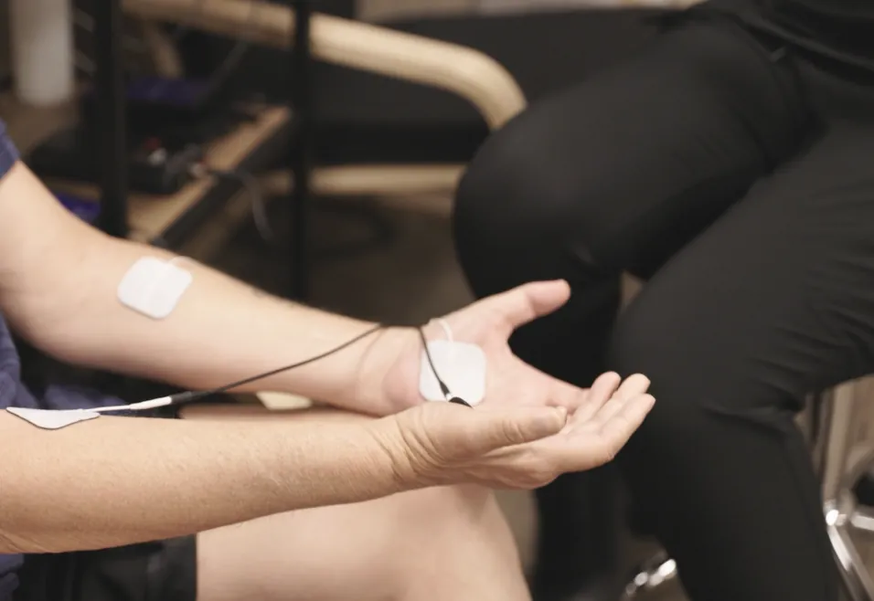
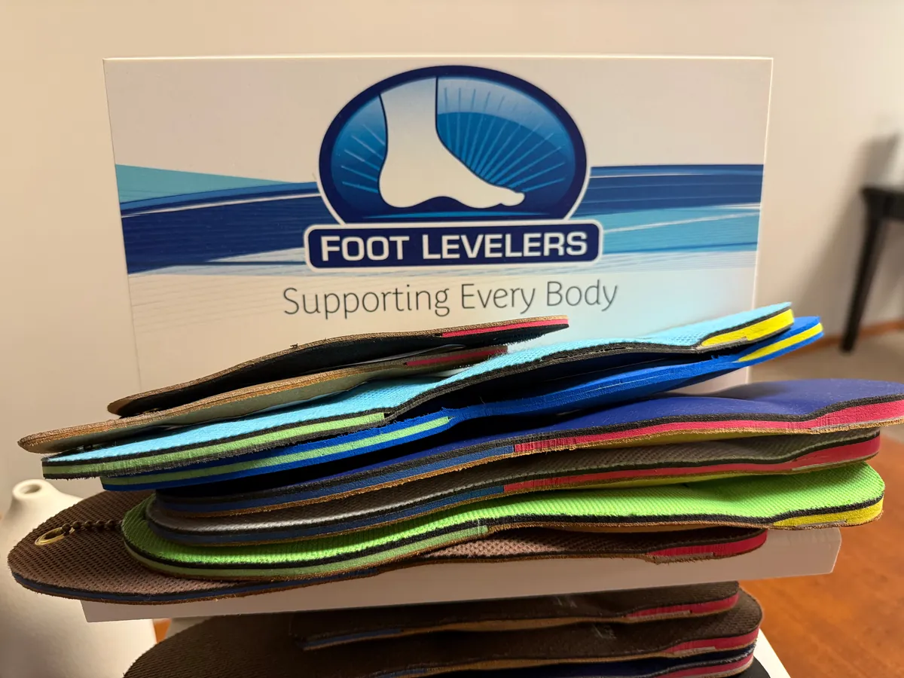
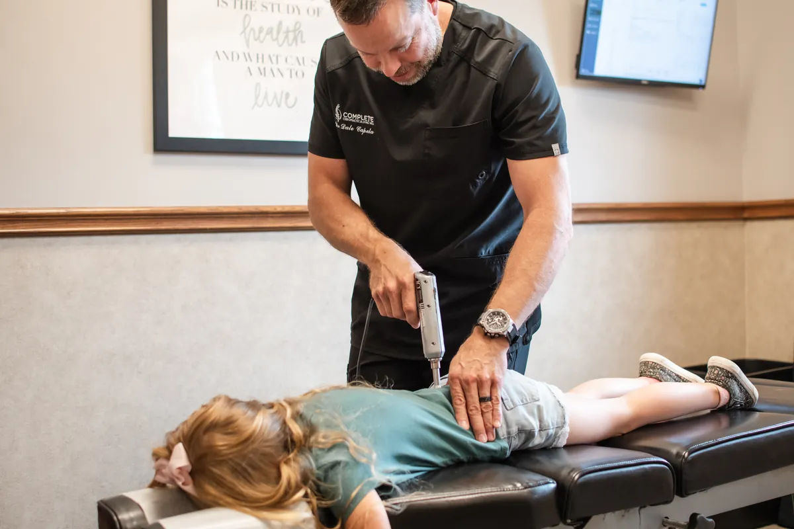
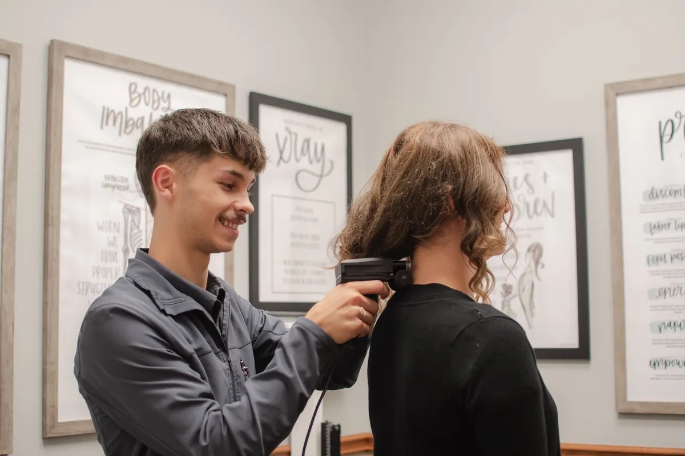

The root cause, not the symptom
We look for what is actually driving the pain, then explain what we find before anything else happens.

Care here starts with listening. We take the time to understand where your discomfort begins, then build a simple plan around your goals.
Tell us a good time and we'll call to confirm.
Dr. Dale Capela has cared for families in Wooster and Wayne County for nearly 30 years. He and his wife, Lydia, own the practice, and they have built a team that welcomes patients like family.
We start by listening, then build a simple plan around your goals. Adjustments, spinal and knee decompression, laser therapy and a range of other therapies are all here in one office.
Choosing a Wooster chiropractor means a natural, hands-on approach to your health. By supporting your body's own ability to recover, our care helps you take an active role in feeling better.

We look for what is actually driving the pain, then explain what we find before anything else happens.
Chiropractic adjustments, spinal decompression, knee decompression, laser therapy, neuropathy care, custom orthotics, pediatric chiropractic, wellness care and nutrition, chosen for what your body actually needs.

Chiropractic AdjustmentsDr. Capela graduated from Life University in ‘97 and has served thousands of families in Wayne County and the surrounding areas for nearly 30 years!
"Helpful staff, great chiropractic experience. Dr Dale has significantly helped my back. I have gained more ability, function and strength."Sacha

Spinal DecompressionNine core services, each with its own page. Start with whichever fits, or call and we will point you to the right one.
Specific adjustments matched to what your spine needs, not a one-size-fits-all routine.
01Gentle motorised traction for the low back, easing pressure on an irritated disc or nerve.
02
Gentle mechanical decompression for knees that ache on stairs and stiffen after sitting.
03
Laser therapy to calm an irritated area, without medication and without downtime.
04
The mechanical and spinal side of neuropathy, alongside the medical care you already have.
05
Custom orthotics made from a scan of your own feet, for when the problem starts at the ground.
06
Gentle, specific care for kids, from infants to teenagers, always at a child’s pace.
07
Ongoing care for people who would rather keep moving well than wait for the next problem.
08Straightforward nutrition guidance for energy and recovery.
09A few of the things patients have said about the care they have had at Complete Chiropractic.
Great experience! Friendly staff, professional care, and I felt much better after my visit. Highly recommend this office to anyone looking for a chiropractor in the Wooster area!
E ElijahFantastic care! Dr Dale and his team treat each patient like family!
H HannahHelpful staff, great chiropractic experience. Dr Dale has significantly helped my back. I have gained more ability, function and strength.
S SachaWe start by listening carefully to understand what is going on, then build a plan shaped around your body and your goals, so your care fits your life rather than the other way around.
Tell us a good time and we'll call to confirm.
5225 Cleveland Rd, Suite A
Wooster, OH 44691
Answers to some of the questions we hear most from patients in Wooster.
Ask us directly